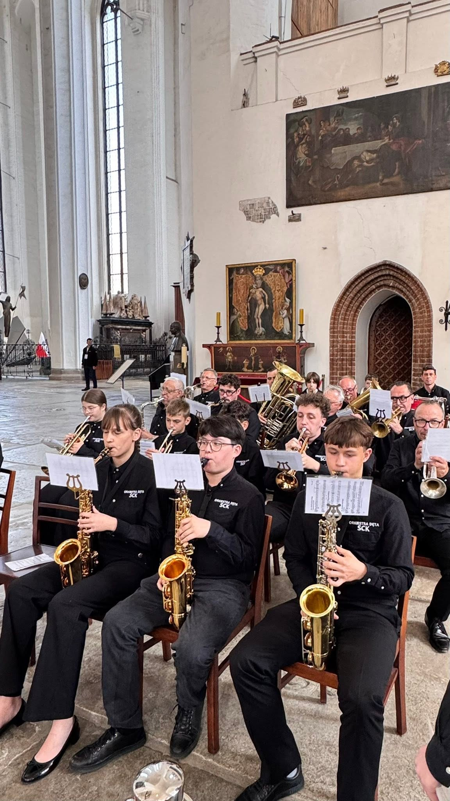
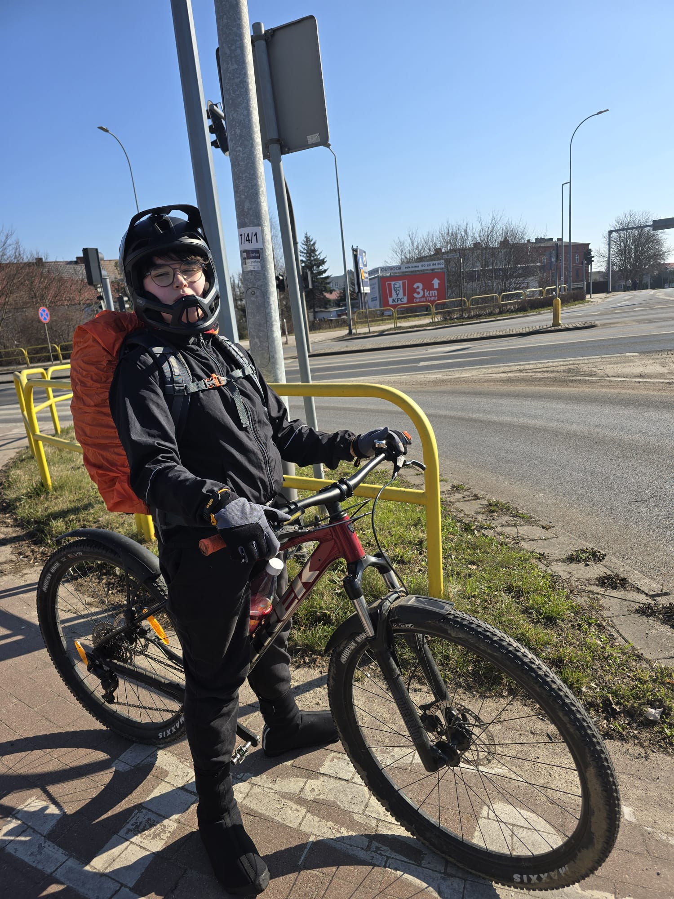
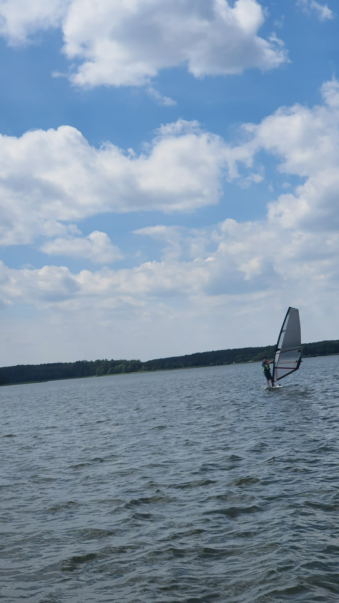

🎵 Muzyka w szkole — nasza energia!
- „Muzyczne przerwy” z playlistami tworzonymi przez uczniów
- Dzień Talentów — pokaż, co potrafisz
- więcej okazji do uczniowskich występów

„Dobre pomysły rodzą się z pasji!”
Muzyka, sport i pomysły uczniów. Chcę, żeby w naszej szkole było więcej okazji do rozwijania pasji, wspólnego działania i dobrej atmosfery.
Jestem uczniem klasy VI A i kandyduję do Samorządu Szkolnego. Moją największą pasją jest muzyka — gram na saksofonie i lubię występować razem z innymi. Ale muzyka to nie wszystko. Lubię też aktywnie spędzać czas: jeżdżę na rowerze i uprawiam windsurfing. Właśnie dlatego zależy mi na szkole, w której różne pasje mogą się spotykać, a dobre pomysły uczniów naprawdę mają znaczenie.

Muzyka łączy ludzi ♫


Klikaj pojawiające się nuty. Masz 30 sekund — spróbuj pobić swój rekord!
Różne pasje. Realne pomysły. Razem możemy więcej! ⭐